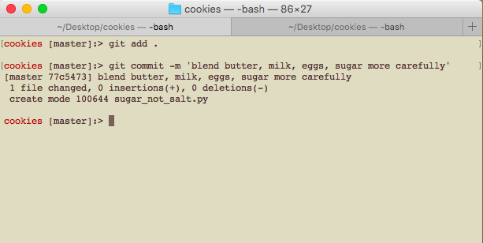

First DBC Post
~ Written as part of my coursework at Dev Bootcamp ~
November 12, 2015
What are the benefits of version control? How does git help you keep track of changes? Why use GitHub to store your code?
Version control maintains a record of changes within a codebase by taking snapshots of every "commit." The most common example of these version control tools is Git. Git was first developed in 2005 by Linus Torvalds to ease collaboration around development of the Linux Kernel. Much like everything else Mr. Torvalds is involved with, Git is now available to all to use as a free software.
GitHub is a website that offers many tools that enable users to take advantage of Git's most valuable features while the repository is hosted online - which makes collaboration with other users even easier.
A Git Tutorial - As applied to baking:
This is what baking cookies might look like if we could use Git version control...
| Baking Step | Issue | Git Command | Result |
|---|---|---|---|
| Start a new recipe | I am starting a new recipe and I'll likely make some mistakes along the way. I would also like to experiment a bit along the way without ruining the whole batch. | This will "initialize" a “repository” of the recipe or project. Every time I “commit changes”, a snapshot of the project’s current state will be saved. | |
| Step one: Whisk flour, baking soda, and salt together. | I took my first important step in baking, and I want to save my progress so far. | Git add . places all the ingredients on a table so I can take a snapshot of their current state. In Git, this is called placing the changes in a “staging area”. | |
| Step one: Whisk flour, baking soda, and salt together. | I took my first important step in baking, and I want to save my progress so far. | “Git commit” takes a snapshot, so I can return to this spot anytime in the future. The ‘-m whisk flour, baking soda, and salt’ adds a message or summary for that snapshot. | |
| Step Two: Blend butter, milk, eggs, and sugar | Blended as advised by the directions. | Again, I placed all the ingredients on the table and then took a picture. | |
| Oh crap! | I accidently added one cup of salt rather than one cup of sugar! | This will show me all the snapshots I’ve taken of my recipe (or all of the commits I’ve made) | |
| I want to return to when the project worked well at the whisk flower step. | I see want to return to when I whisk flower, etc. | Returns the recipe/project to the state it was at when I whisked the flour etc. | |
| Step Two (more carefully this time)… | Blended as advised by the directions. |  | Again, I placed all the ingredients on the table and then took a picture. |
| Time to experiment! | I want to try different flavors without ruining my first batch. |

|
This creates another batch (or another “branch”). I can create as many different branches as I want and the “master branch” won’t be affected. |
| I’ve lost count of my branches! | I’ve created a ton of different branches, I can’t even remember what they were named. | This will show a list of all the branches that exist, and it will highlight the branch that I’m currently on. | |
| I want to mix my branch into the master branch | I love how my chocolate-chip-walnut branch turned out. I want to add all the changes from that branch into the master branch. | The git add . and git commit –m work the same as in earlier steps. You just need to do that before you switch branches to make sure that the changes are saved to that specific branch. Git checkout moves me back to the master branch, and git merch chocolate-chip-walnut incorporates all of the changes in that branch into the current branch. | |
| Delicious cookies! Time to clean up! | Cookies are all done. I need to do the dishes of all those extra branches I made. | When I’m sure I don’t need a branch, it’s smart to delete it to clean up. |